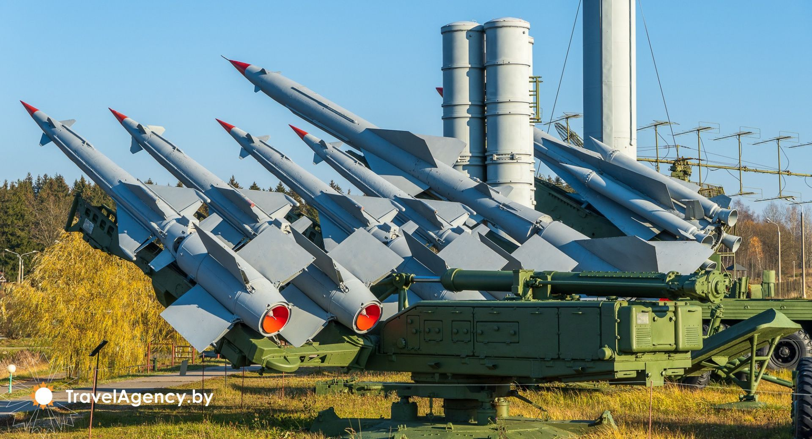
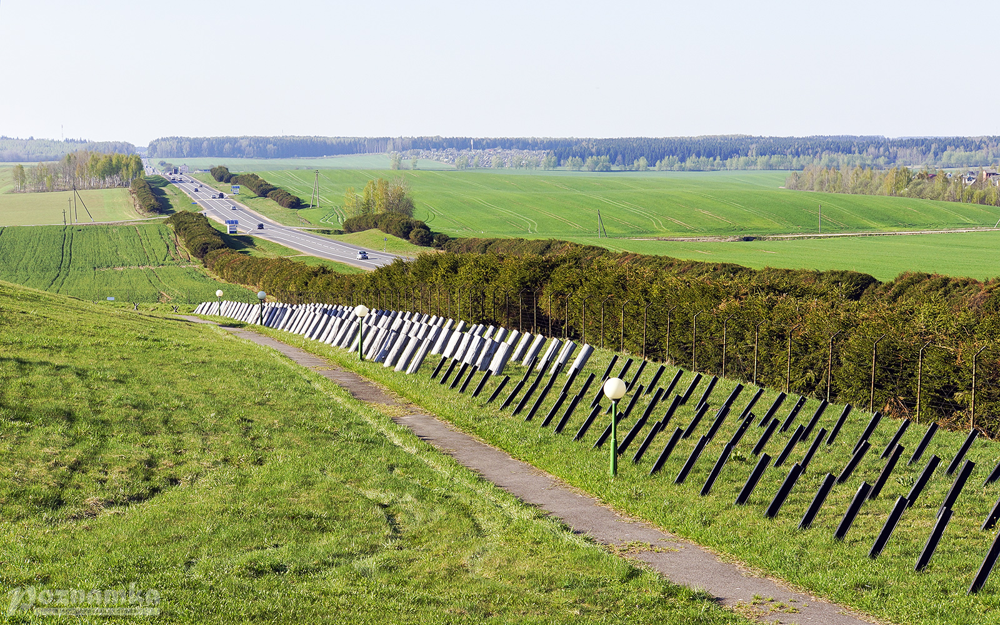

.
Линия Сталина

Историческая «Линия Сталина» была построена в 1930-е годы, составляла 21
укрепрайон, более 4 тысяч дотов, как правило, железобетонных, которые
делились на пулемётные (бронебашенные, бронеколпаки,
командно-наблюдательные пункты) и артиллерийские (полукапониры на два
76-мм орудия и капониры на 4 орудия). Круговое наблюдение осуществлялось с
помощью перископа, телефонная связь поддерживалась по подземным кабелям и
радиостанцией. Амбразуры станковых пулемётов были оборудованы
приспособлениями для герметизации. Дополнительную защиту от отравляющих
веществ и пороховых газов должна была обеспечивать фильтровентиляционная
система. В дотах имелись комплекты запасных частей, инструменты, запасы
воды, продовольствия. После присоединения в 1939–1940 годах к СССР ряда
территорий, в том числе и Западной Беларуси, когда граница отодвинулась на
запад на 350–400 км, необходимость в «Линии Сталина» отпала. Вооружение,
оптические приборы, электротехническое оборудование с дотов сняли, часть
боеприпасов вывезли. На новой границе СССР началось строительство нового
комплекса укреплений, который получил название «Линии Молотова». Но
построить ее не успели. Считалось, что разоруженная «Линия Сталина», за
исключением нескольких дотов, не сыграла особой роли в те страшные первые
дни Великой Отечественной войны.

На территории Беларуси было четыре укрепрайона: Полоцкий, Мозырский,
Слуцкий и самый мощный, протяжённостью 140 км – Минский. Только здесь
немцы потеряли около 10 тысяч солдат и более сотни танков. Около 80 дотов,
построенных вблизи Заславля, держали под обстрелом дорогу на белорусскую
столицу. Немцы захватили Заславль, откуда уже было рукой подать до Минска.
Именно опираясь на поддержку дотов, красноармейцы выбили их с Заславля и
удерживали этот стратегический городок более двух дней. Ещё дольше держали
немецкую группу армий Гота, наступающую на Минск из-под Вильнюса, в
составе которой было около тысячи танков, доты, построенные близ
Родошковичей. Отдельные доты продолжали вести бой от двух до четырёх дней,
а в ряде районов, сковывая силы врага, продержались более недели.
Мозырский укрепрайон и некоторые его доты держались вплоть до августа 1941
года. Немцы расстреливали их из артиллерийских орудий, пытались достать
огнемётами, травили газами… Но даже после этого доты «Линии Сталина»
продолжали сражаться. В них останавливались белорусские партизаны, иногда
они там держали бой. В 1942 году немцы стали взрывать эти сооружения.
Уцелели только те, что находились поблизости немецких гарнизонов.Сегодня,
после более чем 60 лет забвения, «Линия Сталина» вновь обрела своё имя,
возрос интерес к её защитникам. Историко–культурный комплекс «Линия
Сталина» создан менее чем за полгода в рамках выполнения указания
Президента о сохранении исторического наследия белорусского народа,
связанного с защитой Родины в годы Великой Отечественной войны.